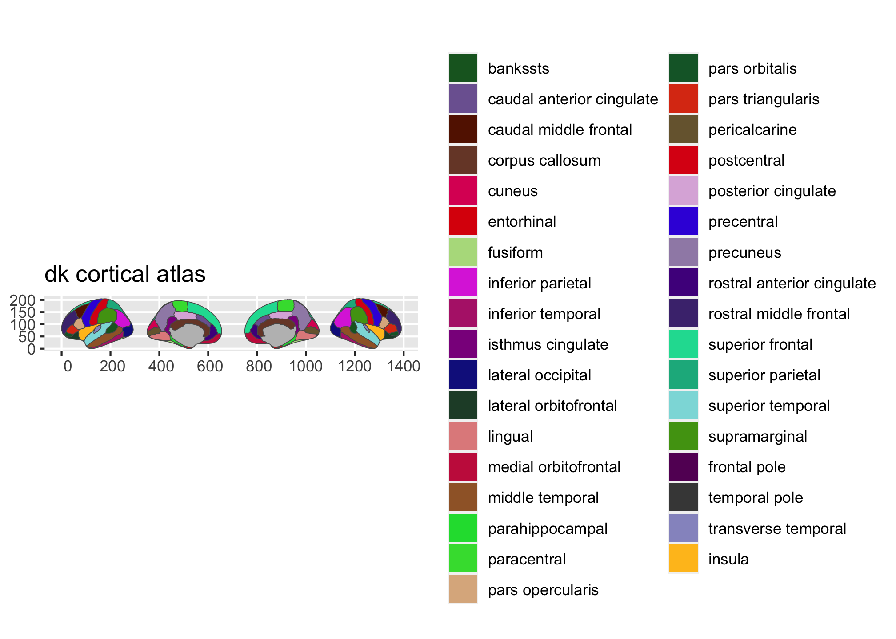
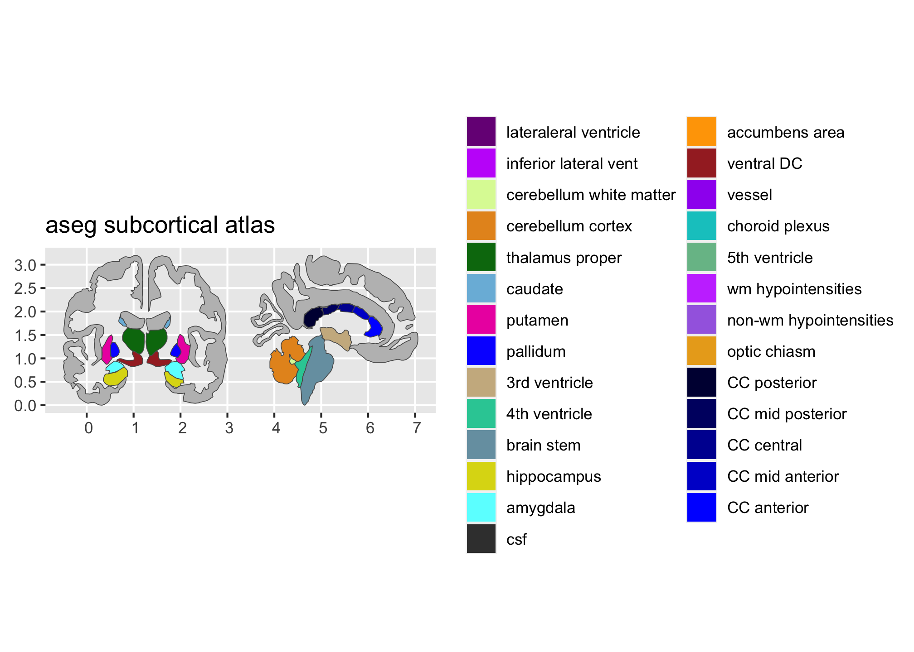
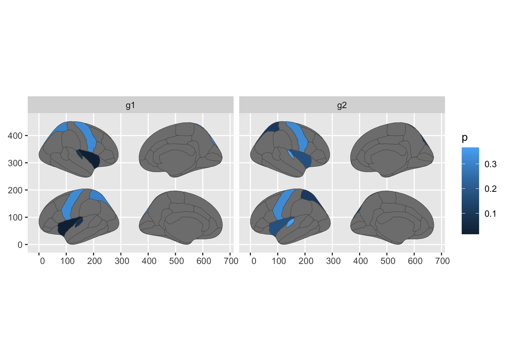

Contains ggplot2 geom for plotting brain atlases using simple features. The largest component of the package is the data for the two built-in atlases. Plotting results of analyses on regions or networks often involves swapping between statistical tools, like R, and software for brain imaging to correctly visualise analysis results.
This package aims to make it possible to plot results directly through
R.
Atlases
There are currently four atlases available in the package:
-
dk- Desikan-Killany atlas (aparc).
-
aseg- Automatic subcortical segmentation.
Note: As of version 1.5.3, ggseg was split into two packages: one for 2d polygon plots in ggplot, and another for 3d mesh plots through plotly. This was done to reduce package size, dependencies, and also to simplify maintenance. If you want the 3d plotting tool, please go the ggseg3d repository.
You may find more atlases and functions to create new atlases in the companion package ggsegExtra.
Installation
The package can be installed from CRAN.
install.packages("ggseg")The development version of the package can be installed using devtools. The package includes some large datasets for the brain coordinates. Please be patient during download and install, it will take some time.
install.packages("remotes")
remotes::install_github("ggseg/ggseg", build_vignettes = TRUE)The functions are now installed, and you may load them when you want to use them. All functions are documented in standard R fashion.
Use

plot(aseg)
While default atlas plots will give you an idea of how the atlases look, you will likely want to project your own data onto the plot.
library(dplyr)
#>
#> Attaching package: 'dplyr'
#> The following objects are masked from 'package:stats':
#>
#> filter, lag
#> The following objects are masked from 'package:base':
#>
#> intersect, setdiff, setequal, union
someData <- tibble(
region = rep(c("transverse temporal", "insula",
"precentral","superior parietal"), 2),
p = sample(seq(0,.5,.001), 8),
groups = c(rep("g1", 4), rep("g2", 4))
)
someData %>%
group_by(groups) %>%
ggplot() +
geom_brain(atlas = dk,
position = position_brain(hemi ~ side),
aes(fill = p)) +
facet_wrap(~groups)
#> merging atlas and data by 'region'
The package also has several vignettes, to help you get started using it. You can access it here
You can also see one of the creators blog for introductions to its use here
Report bugs or requests
Don’t hesitate to ask for support using github issues, or requesting new atlases. While we would love getting help in creating new atlases, you may also request atlases through the issues, and we will try to get to it.